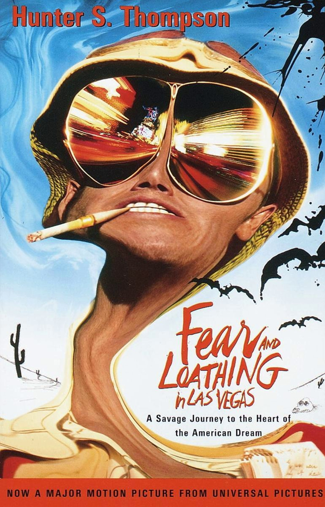

Jami Owen
Candidate for Entry Level Software Developer / Data Scientist
Results-driven and motivated graduate with a Bachelor of Science degree actively seeking to transition to a career role in Software Development and Data Science. Applies strong attention to detail and efficient multi-tasking abilities to excel in critical development environments, with expertise in advanced SQL, Python, Ruby on Rails, HTML, CSS, and JavaScript. Serves as an effective member of dynamic technical teams, communicating in a clear and concise manner while exercising creative problem solving. Exceptional leadership and teamwork skills developed in the military.
Skills
- Mathematics
- R
- MATLAB
- Ruby on Rails
- Javascript
- Python
- SQL
- HTML
- CSS
- Problem Solving
- Data Analysis
- Team Leadership
Education History
Le Wagon
Lisbon, Portugal: batch 205, 2018
9-week intensive coding bootcamp learning HTML, CSS, Bootstrap, JavaScript ES2015, SQL, git, GitHub, Heroku and Ruby on Rails. Designed, implemented and shipped to production a clone of AirBnB and a Rails prototype of http://www.flavour-community.club (Mobile).
Western Washington University
Bellingham, WA: 2014-2017
Studied and practiced the core understandings of pure mathematics. Emphasizing in statistics and data anaylists. Mastered mathematical programing languages MATLAB, R, and Mathematica.
Work History
Position: Driver
Company: UPS
Operated and maintained package delivery truck in south Manhattan. Responsible for the security and timely delivery of high value packages. Demonstrated time management skills and organizational abilities through route planning and communication to achieve required time commitments
Position: Administrative Assistant
Company: Jern's Funeral Chapel
Coordinated and executed a variety of administrative and clerical responsibilities at this provider of funeral services to Whatcom County, including securing and filing official documentation, cash handling, and inventory management to support all facets of operations. Excelled in high-stress, highly sensitive environments, working with family members to remove and transport the deceased between homes, hospitals, and other facilities to the funeral home with the highest levels of compassion and dignity. Maintained and operated cremation machinery. Coordinated and led the training of new employees in the field, building competencies in all facets of removal and equipment handling.
Position: Communications Specialist
Company: United States Army
Maintained accountability for military communications equipment valued in the millions of dollars in domestic and international assignments, safeguarding the health and welfare of enlisted soldiers in peacetime and combat theaters of operation. Maintained a secret security clearance during this role. Served as the Non-Commissioned Officer in Charge of a team in Afghanistan; assumed a lead role organizing and overseeing unit operations to ensure the achievement of all goals in a timely and accurate manner. Served in Headquarters Company, documenting and overseeing mandatory testing, leading procurement, and executing the scanning and filing of hardcopy documentation.
Favorite Movies
|  |
1998 - Fear and Loathing in Las VegasAn oddball journalist and his psychopathic lawyer travel to Las Vegas for a series of psychedelic escapades. "Two thumbs way way up!" -Jami Owen Moms living room |
2006 - Pan's LanyrinthIn the falangist Spain of 1944, the bookish young stepdaughter of a sadistic army officer escapes into an eerie but captivating fantasy world. "Had no idea what was going on." -Jami Owen Moms living room |
|
1993 - Jurassic ParkDuring a preview tour, a theme park suffers a major power breakdown that allows its cloned dinosaur exhibits to run amok. "Like big chickens." -Jami Owen Moms living room |